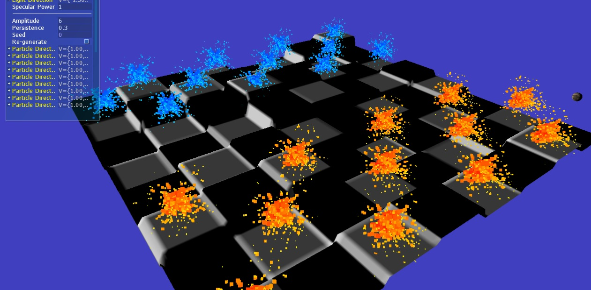
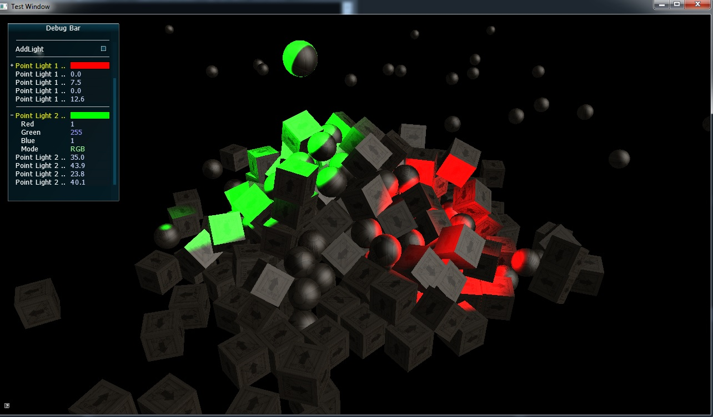
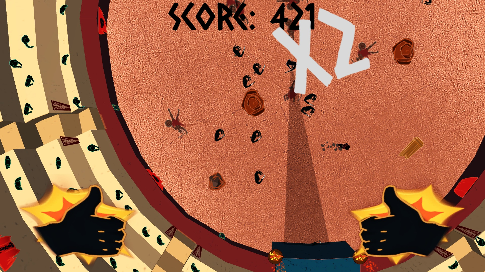
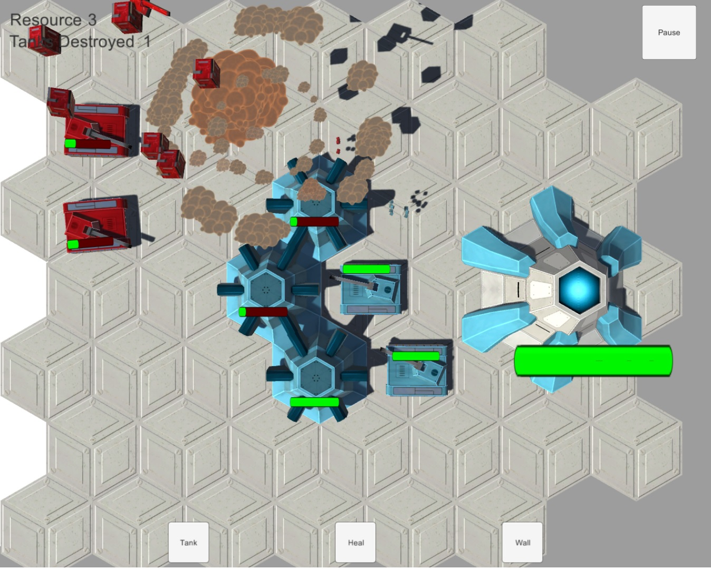

Projects
Below is a list containing a selection of some of the better projects that I have worked on (or am working on), with my most recent projects at the top of the page, and my oldest ones at the bottom.
Super Star Skirmish
Super Star Skirmish is the project that I am currently working on, and is my biggest game yet. Super Star Skirmish is a super fast-paced mashup of the Twin-Stick Shooter and MOBA genres.
Development Context: Super Star Skirmish has been my main project for the last three and a half months, and is being worked on by a team that currently has three programmers, four artists and two designers (it started with two of each). Within it, I am working as the project lead and as a programmer.
Super Star Skirmish is an attempt to combine the accessibility and arcade fun of Twin-Stick Shooters with the strategy and coordination of MOBA games. It has the same basic formula as most MOBA games, but has the controls and speed of a Twin-Stick Shooter, with most games lasting for 5-10 minutes. Gameplay involves two team of three attempting to destroy each other's core by defending their allied minion units and destroying enemy defensive towers, while attempting to prevent the enemy team from doing the same. The game also features capturable objectives, which provide bonuses to the capturing team and act in a similar role to neutral creeps in other MOBA games. At the moment, Super Star Skirmish features three different classes, each with different abilities and stats.
This game has been a crazy introduction to making a networked game, working in Unreal Engine, and managing such a (relatively) large team, and I've learnt a massive amount from working on it.
You can access the Facebook page for Super Star Skirmish here, or read our blog here.
Engine-S
Engine-S is a game development framework that I created in C++ with OpenGL. This is the only game development framework that I have worked on, and while it is relatively basic, I greatly enjoyed making it.
Development Context: Engine-S was my main project for six months. I was the only person working on it.
The framework currently allows users to easily create games, and has the following features:
- Can generate plane meshes.
- Can load in .obj models.
- Can load in .fbx models (both static and animated ones).
- Can load in and apply textures, normal maps and specular maps to any objects within the game world.
- Can move objects within the game world around.
- Has built-in lighting, and allows some light settings to be changed at run-time with a debug GUI. Lighting includes both directional lighting and point lights.
- Can do both deferred and forward lighting, and allows easy switching from deferred to forward in real-time.
- Can generate shadows for any objects in the game world.
- Can procedurally modify any model through the use of Perlin noise.
- Can create particles and particle emitters on either the CPU or GPU, and can be emitted in both cones and spheres..
- Particles can be both textured and lit.
- Can easily render any in-game camera's output to texture.
I also created several minor projects within the framework, to show off what it can do. These include a checkers game and some messing around with PhysX.
The link in the heading leads to the GitHub page for Engine-S. A test level used to show some of the features can be downloaded here.
 Katastratig
Katastratig is a top-down dodging game that a group of other AIE students and I made in Unity. It features the most polish of any of the Unity games that I have worked on.
Development Context: Katastratig was a side-project produced over five weeks during the same time that I was working on Engine-S. I worked on it for 1-2 days per week. Within it, I worked as the programming lead on a team with two programmers, three artists and a designer.
Katastratig is all about dodging- you play as a person thrown into the colosseum without any weapons, and must dodge your way around enemies and trick them into killing each other. The game features two different enemy types- archers, who fire arrows at the player, and swordsmen, who charge at the player.
Click here to download a release build of Katastratig. The link in the heading leads to the GitHub page that contains the scripts used in this game. Note: due to poor usage of GitHub, this projects commits do not necessarily reflect the person who created/modified that file- see the comments at the beginning of each script to see who wrote it.
Tactical Tank Conflict
Tactical Tank Conflict is an RTS/Tower Defense game that I created in Unity with a group of other students.
Development Context: Tactical Tank Conflict was a side-project produced over four weeks during the same time that I was working on Engine-S. I worked on it for 2-3 days per week. Within it, I worked as the programmer on a team with one programmer, two designers and three artists.
The game plays like a Tower Defense game, with the player placing tanks and walls around the map. Enemies attack your walls and tanks on their way to the end, and the player will have to split their resources between repairing their tanks and walls, and placing more. The core mechanic of the game was healing- the game was aimed at providing a 'support' experience. In order to focus players on this element of the game, destroyed allied tanks left the place they had died in unavailable for further unit construction, ensuring that players had to heal their tanks. Enemy tanks would choose to either focus on taking out your units, or reaching the end, forcing the player to produce defences that worked against both enemy AI types.
Click here to download a build of Tactical Tank Conflict, or click the link in the heading to download the Unity project for the game.
Moderate Downpour
Moderate Downpour is a one-button 'endless stroller' game that I created in Unity with a group of other students.
Development Context: Moderate Downpour was a side-project produced over four weeks during the same time that I was working on Engine-S. I worked on it for 1-2 days per week. Within it, I worked as a programmer on a team with two programmers, two designers and three artists.
In Moderate Downpour, you play as a man walking through a storm who must avoid various hazards: splashes from passing cars, incoming lightning, various objects thrown at you by the wind, and the relentless downpour of rain. You avoid these hazards by switching your umbrella between being up and being forwards- having the umbrella forwards blocks most hazards, however for as long as the umbrella is forwards, you will be getting wet, which blurs the screen, and eventually kills you.
Click here to download a release build of Moderate Downpour, or click the heading above to access the GitHub page for it.

Match³
Match Cubed is a web game that I made using Javascript(and some HTML and CSS), and currently holds the honour of being the most fun game that I have produced (in my opinion). It won me the 2014 "Best Technical Project" award for first year AIE students.
Development Context: Match³ was my main project for two months. I was the only person on the project.
Match Cubed is a Columns-style game with a twist- it plays out in three dimensions! Groups of three coloured blocks fall from the sky, and by moving those blocks forwards, backwards, left, right, and switching the order of the blocks, you must make lines of three or more blocks of the same colour. Additionally, white blocks cannot be matched- they fall through the bottom of the game world, and so blocks beneath them must be matched to move them downwards. As you play, the game gets progressively faster, and if you make it far enough, more colours can be added, ensuring that the difficulty ramps up quickly.
Click on the heading above to play Match³ .